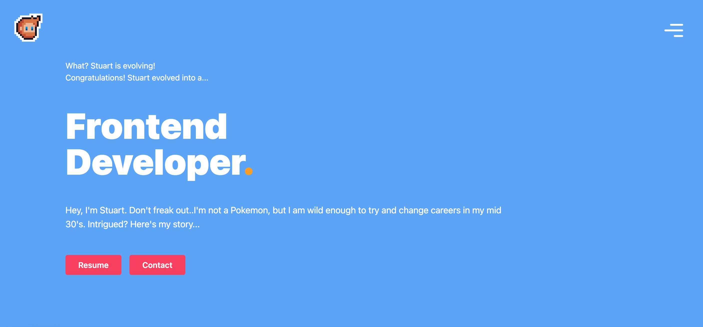

In 2022 I decided that I was going to change careers. I had always been intrigued by programming but thought it would be too complicated. After learning about python and it's lovely syntax, I enrolled in an online course and began learning to code. Within this Python course there was a module about frontend development to give us something to look at whilst learnign to use Python on the backend. This is where I fell in love with frontend development and enrolled in another course focusing on that. I enjoy frontend development because it allows me to be creative, solve problems and it provides visual feedback. I'm currently working on a personal website.
 RETURN TO HOMEPAGE